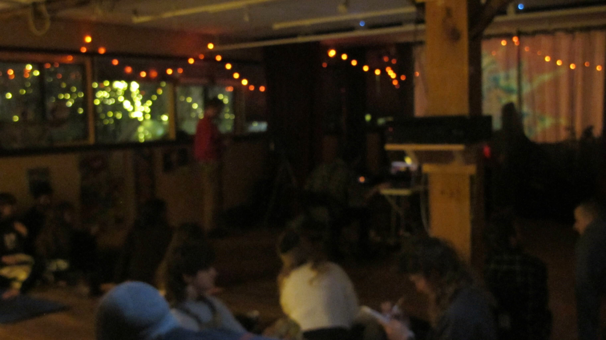

Summer notes - June 2024
I am trying to get better at treating this as a public notepad, and less like a "website". To that end, here are some notes on upcoming shows and releases for this summer.
Loading Screen Music
On June 21 I'm releasing a collaborative album with my friend Ian Steinberg, a.k.a. Coppermind. I'll write more about it closer to release day, but if you're a fan of minimal piano ambient music then you should check it out. If you listen on Spotify, you can pre-save it here.
We also made a limited run of cassettes for the release. Will post a link to those when they are available for mail order too.
Summer shows
My next performance will be at Ethereal Bloom, the recurring ambient / experimental music series I host at Spiral House Collective. Ian and I will be playing through Loading Screen Music almost in its entirety as a little album release show. We will also be joined by the incredible harpist Marie Hamilton and ambient guitar wizard Tom Pearo.

I've also got a performance on July 14 at Burlington City Arts, which I can't share much about yet, but will post more details soon.
Sound installation
I am working on my first sound installation piece for an interactive exhibit at The Phoenix in Waterbury, VT. And I am highly jazzed about it. The exhibit will be a community created collage, for which I am designing an audio-reactive musical system which will take shape as the collage mural takes shape over the course of two days. Will do a little write-up on how it all works once I figure that out.
The sound installation will culminate with a performance consisting of me reacting and responding to the musical system on July 13 at 7pm.